Your Vision-Language-Action Model Already Has Attention Heads For Path Deviation Detection
Under review, 2026

Project Collaborators — Jaehwan (left) and Tuan-Anh Vu (right)
TL;DR
We propose an end-to-end robotic navigation framework that pairs a high-level VLA model with a continuous low-level RL policy. During normal operation, the RL policy constantly ensures reactive, collision-free obstacle avoidance, while highly accurate LiDAR-RGB-IMU sensor fusion (LiVO) continuously logs safe waypoints. Simultaneously, by monitoring specialized internal attention heads, the system detects VLA hallucinations and path deviations in real-time with zero computational overhead. When a deviation occurs, the system seamlessly leverages the active RL policy to execute a direct safe recovery, autonomously navigating back to the last correct path for highly reliable real-world deployment. The entire pipeline is built on ROS 2, enabling modular integration and real-time operation on physical hardware.
Key Contributions
- Discovery of Navigation Heads — We identify a sparse subset of attention heads (Hnav) in frozen VLA models that inherently capture the spatiotemporal alignment between visual observations and linguistic intent, exhibiting a strong correlation with the agent's navigation state.
- Training-Free Anomaly Detection — We propose a real-time detection framework that monitors Hnav dynamics with zero computational overhead and no trainable parameters, achieving a 65.1% path deviation detection rate (recall) and a 76.4% F1 score in R2R unseen environments, thereby effectively mitigating the model hallucination issue.
- VLA–RL Integrated Pipeline — We couple the high-level anomaly signal with a continuous low-level RL policy, ensuring robust collision-free obstacle avoidance during normal operation and enabling autonomous, direct safe recovery upon detecting a path deviation.
- Real-World Deployment — The entire end-to-end framework is deployed zero-shot onto a physical robot, demonstrating practical robustness and reliable embodied navigation in real-world conditions.
Project Design
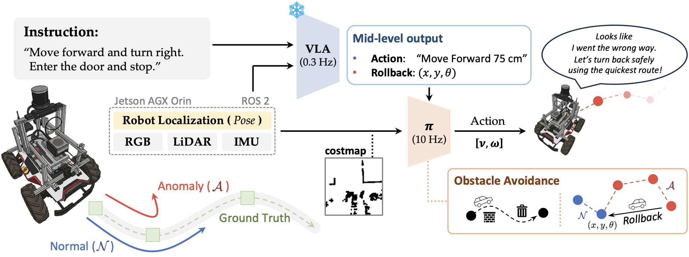
HiVLA runs two parallel loops: the high-level NaVILA model (~0.3 Hz) interprets egocentric observations and language instructions to plan navigation waypoints, while the low-level RL policy (~10 Hz) handles reactive obstacle avoidance in real time. Localization is provided by Fast-LIVO2, which tightly fuses LiDAR, RGB, and IMU data, and the full pipeline is orchestrated over ROS 2.
1. High-Level — Path State Monitoring & Anomaly Detection
Training-free anomaly detection via Navigation Heads, running at ~0.3 Hz with zero computational overhead.
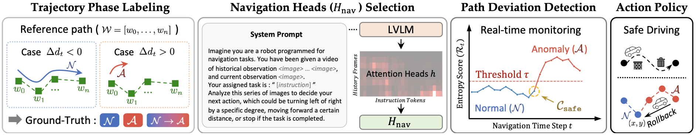
The anomaly detection pipeline operates in four stages. Expert demonstrations are first segmented into navigation phases (Phase Labeling), then each attention head is scored by how well its activations correlate with those phase transitions (Head Selection). At inference, the top-K heads are monitored for residual spikes (Anomaly Detection), and any flagged deviation immediately hands control to the RL recovery policy (Action Policy).
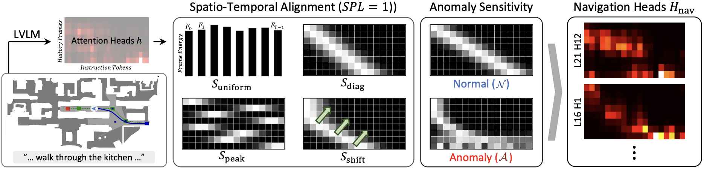
The three discovered Navigation Heads track the robot's navigation phase faithfully while on the correct path, then produce a sharp, detectable divergence the moment a deviation begins, often before the trajectory is visibly off-course.
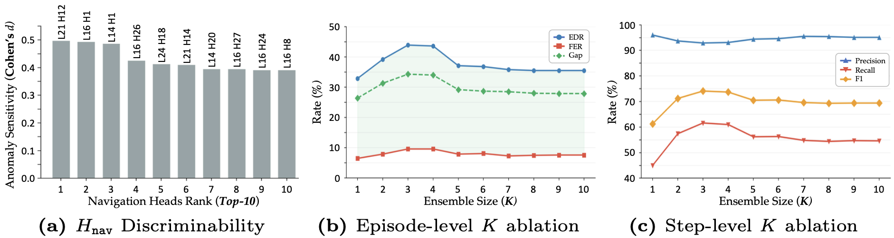
Layer–head diagnostic score grid across NaVILA's 32 × 32 attention space, used to identify which heads carry the strongest navigation-state signal.
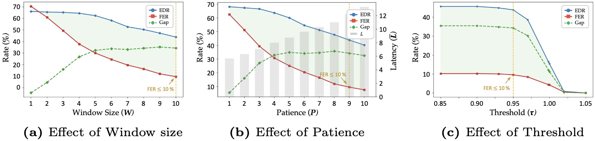
Ablation over K (number of selected heads). K = 3 yields the best balance between precision and recall; see the paper for the full sweep.
2. Low-Level — Local Obstacle Avoidance
A lightweight actor-critic RL policy trained in Isaac Lab and deployed zero-shot on physical hardware at ~10 Hz.
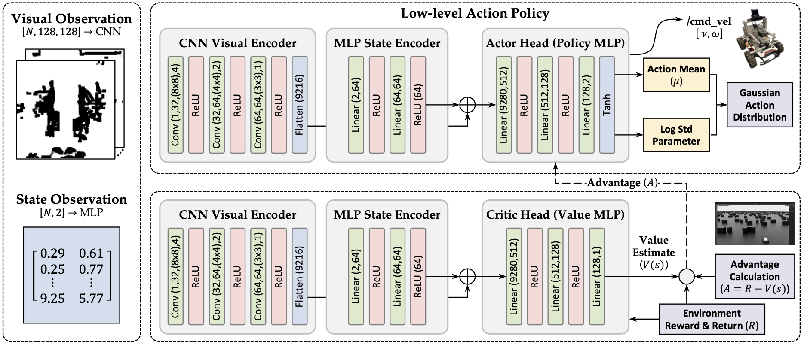
The actor-critic network combines a CNN branch that encodes the local costmap for spatial obstacle awareness with an MLP branch that encodes the goal vector. Together they produce continuous velocity commands (vx, ωz) that cover both routine obstacle avoidance and emergency deviation recovery.
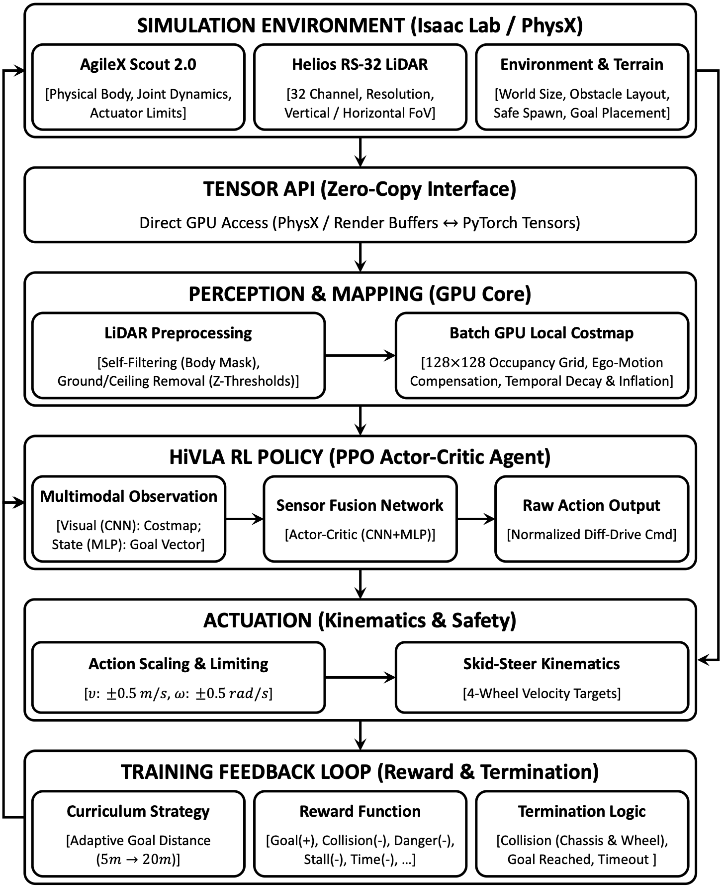
Training is conducted in Isaac Lab using PPO. Obstacle layouts and goal positions are randomized each episode, pushing the policy to generalize beyond the specific configurations it was trained on.
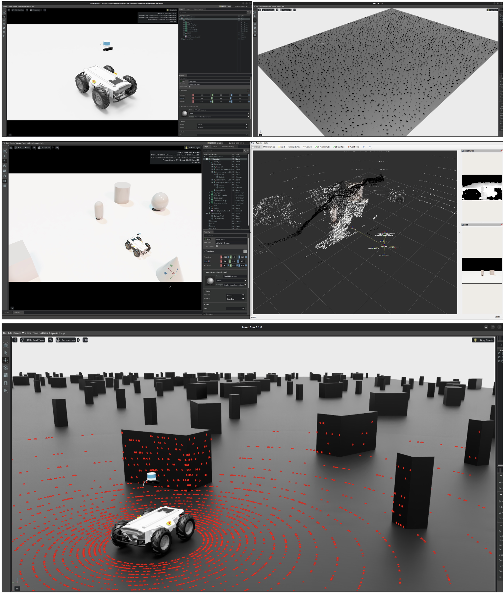
The simulated environment is built at 1:1 scale to match the physical AgileX Scout 2.0, minimizing the sim-to-real gap and enabling zero-shot transfer to the real robot.
3. Real-World — ROS 2 Deployment
Hardware platform, ROS 2 architecture, sensor calibration, and end-to-end validation on the physical robot.
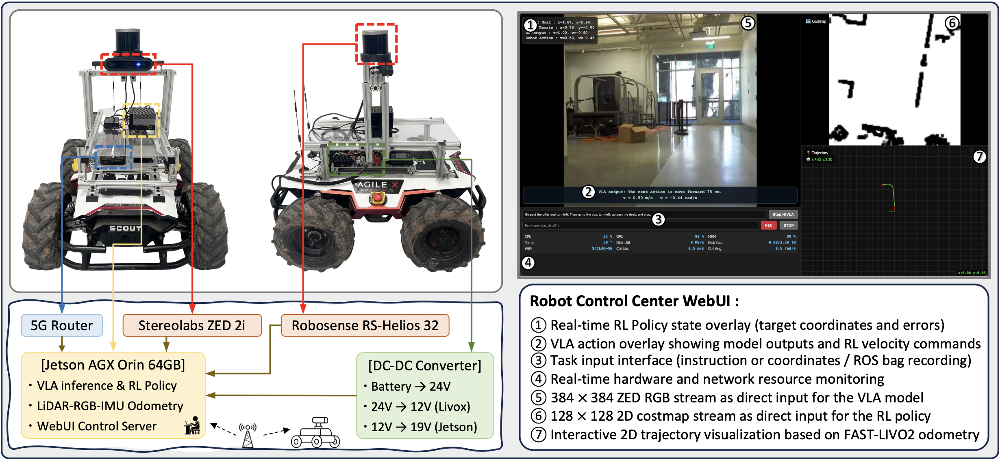
The system is deployed on an AgileX Scout 2.0 powered by an NVIDIA Jetson AGX Orin (64 GB). A custom Control Center WebUI provides live visualization of navigation states, anomaly signals, and logged safe waypoints throughout field experiments.
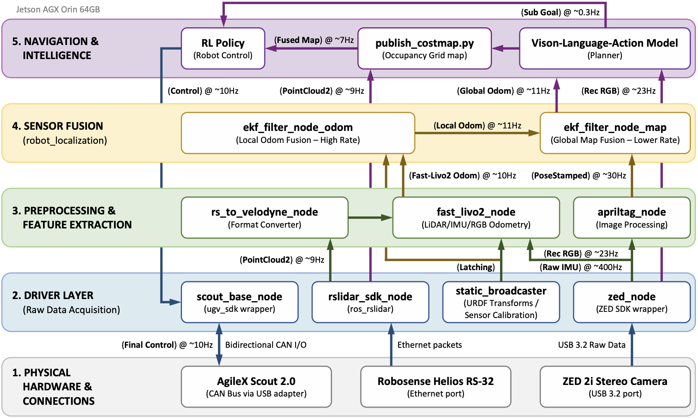
All components communicate over ROS 2 as modular nodes: VLA inference, Navigation Head monitoring, RL policy execution, Fast-LIVO2 localization, and sensor data streams each run independently at configurable rates, making the pipeline easy to extend or swap out.
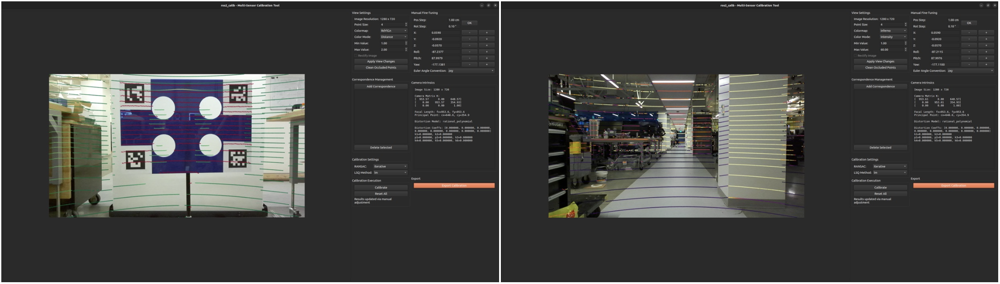
Extrinsic calibration between the ZED 2i stereo camera and RS-LiDAR-32 ensures precise spatial alignment — a prerequisite for the tight LiDAR-RGB-IMU fusion that Fast-LIVO2 relies on for low-drift localization.
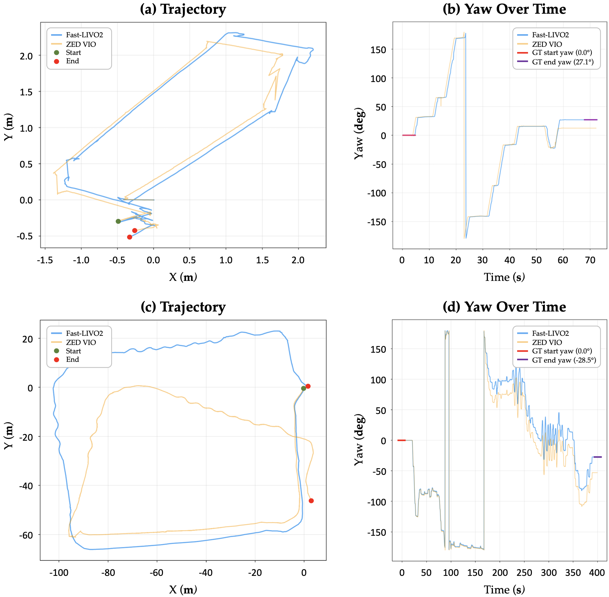
Compared to ZED VIO (vision-only odometry), Fast-LIVO2 achieves substantially lower trajectory and yaw drift, providing the reliable pose estimates needed to accurately log safe waypoints for the recovery module.
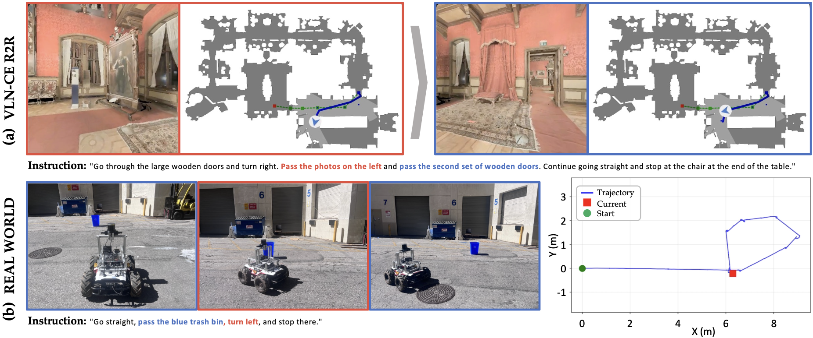
End-to-end real-world validation. On the left, the RL policy avoids both static and dynamic obstacles in a cluttered corridor. On the right, after the Navigation Heads flag a path deviation, HiVLA executes an autonomous recovery back to the last logged safe waypoint — completing the task without any human intervention.
Experiments
Anomaly Detection — NaVILA Backbone
Training-free anomaly detection on R2R Val-Seen and Val-Unseen. All baselines require near-zero inference overhead; hyperparameters derived solely from the train split. Bold = best per column.
| Method | R2R Val-Seen | R2R Val-Unseen | ||||||||||
|---|---|---|---|---|---|---|---|---|---|---|---|---|
| All Episodes | N→A Step-level | All Episodes | N→A Step-level | |||||||||
| EDR ↑ | FER ↓ | Gap ↑ | Prec. ↑ | Rec. ↑ | F1 ↑ | EDR ↑ | FER ↓ | Gap ↑ | Prec. ↑ | Rec. ↑ | F1 ↑ | |
| Stagnation | 24.5% | 4.8% | 19.7% | 99.7% | 31.3% | 47.7% | 29.6% | 5.9% | 23.7% | 95.6% | 38.7% | 55.1% |
| Act. Failure | 0.3% | 6.0% | −5.7% | 70.6% | 2.8% | 5.5% | 1.5% | 6.3% | −4.8% | 77.9% | 5.6% | 10.4% |
| Uncertainty | 1.5% | 0.0% | 1.5% | 100.0% | 0.8% | 1.6% | 1.7% | 0.0% | 1.7% | 100.0% | 2.1% | 4.1% |
| Ours | 44.6% | 11.7% | 32.9% | 91.3% | 68.6% | 78.3% | 41.9% | 9.6% | 32.2% | 92.5% | 65.1% | 76.4% |
Anomaly Detection — NaVID Backbone
Architecture generalizability: the same pipeline applied to NaVID, with heads and hyperparameters optimized on the R2R train split only.
| Method | R2R Val-Seen | R2R Val-Unseen | ||||||||||
|---|---|---|---|---|---|---|---|---|---|---|---|---|
| All Episodes | N→A Step-level | All Episodes | N→A Step-level | |||||||||
| EDR ↑ | FER ↓ | Gap ↑ | Prec. ↑ | Rec. ↑ | F1 ↑ | EDR ↑ | FER ↓ | Gap ↑ | Prec. ↑ | Rec. ↑ | F1 ↑ | |
| Stagnation | 22.4% | 6.3% | 16.1% | 91.7% | 30.6% | 45.9% | 18.1% | 7.0% | 11.1% | 95.6% | 23.9% | 38.2% |
| Act. Failure | 3.1% | 6.8% | −3.7% | 80.6% | 3.3% | 6.3% | 2.6% | 8.8% | −6.2% | 70.5% | 3.7% | 7.1% |
| Uncertainty | 37.0% | 31.1% | 5.9% | 100.0% | 17.3% | 29.5% | 28.9% | 27.1% | 1.8% | 96.1% | 18.5% | 31.0% |
| Ours | 32.3% | 8.1% | 24.2% | 79.7% | 57.3% | 66.7% | 27.9% | 12.1% | 15.8% | 77.8% | 53.2% | 63.2% |
RL Obstacle Avoidance — Navigation Performance by Distance
SR: Success Rate ↑, CR: Collision Rate ↓, TR: Timeout Rate ↓. Bold = best, underline = second best per column.
| Method | 5 m | 10 m | 15 m | 20 m | ||||||||
|---|---|---|---|---|---|---|---|---|---|---|---|---|
| SR ↑ | CR ↓ | TR ↓ | SR ↑ | CR ↓ | TR ↓ | SR ↑ | CR ↓ | TR ↓ | SR ↑ | CR ↓ | TR ↓ | |
| APF | 60.6% | 5.9% | 33.6% | 48.4% | 10.0% | 41.6% | 41.4% | 10.0% | 48.6% | 39.3% | 8.8% | 51.9% |
| DWA | 17.6% | 75.8% | 6.6% | 16.2% | 82.8% | 1.0% | 21.1% | 78.1% | 0.8% | 16.2% | 81.8% | 2.0% |
| MPPI | 3.7% | 90.0% | 6.3% | 2.7% | 91.6% | 5.7% | 1.6% | 91.6% | 6.8% | 2.0% | 91.4% | 6.6% |
| TEB | 65.6% | 24.0% | 10.4% | 51.0% | 40.6% | 8.4% | 41.0% | 50.4% | 8.6% | 31.1% | 59.4% | 9.6% |
| Ours | 83.8% | 6.4% | 9.8% | 88.1% | 4.1% | 7.8% | 90.0% | 5.1% | 4.9% | 86.7% | 5.5% | 7.8% |
Computational Efficiency — VLA Module
Overhead of integrating the path deviation detection module. Evaluated on a single NVIDIA RTX 6000 Ada GPU. No additional VRAM is required.
| Configuration | Total Time | Alloc. VRAM | Peak VRAM |
|---|---|---|---|
| NaVILA (Baseline) | 583.5 ms | 17,145.6 MB | 18,730.3 MB |
| NaVILA + Ours | 603.3 ms | 17,145.6 MB | 18,730.3 MB |
| Difference | +19.8 ms | 0.0 MB | 0.0 MB |
Computational Efficiency — RL Policy
Lightweight CNN + MLP (4.89 M parameters). Evaluated on a single NVIDIA RTX 6000 Ada GPU.
| Configuration | Total Time | Alloc. VRAM | Peak VRAM |
|---|---|---|---|
| Ours (RL Policy) | 0.2 ms | 26.9 MB | 27.9 MB |
End-to-End Inference — Jetson AGX Orin
VLA inference time over 100 runs. Compared to standalone NaVILA, the full HiVLA pipeline adds only ~0.55 s, which includes localization and path deviation monitoring.
| Configuration | Mean (s) | Median (s) | Min / Max (s) | Stdev (s) |
|---|---|---|---|---|
| NaVILA | 3.488 | 3.489 | 3.461 / 3.509 | 0.008 |
| NaVILA + RL | 3.488 | 3.489 | 3.461 / 3.509 | 0.008 |
| NaVILA + ZED VIO + RL | 4.584 | 4.588 | 4.525 / 4.645 | 0.025 |
| NaVILA + Fast-LIVO2 + RL | 3.971 | 3.968 | 3.918 / 4.046 | 0.024 |
| Ours | 4.022 | 4.020 | 3.910 / 4.120 | 0.041 |
State Estimation — Accuracy Comparison
Fast-LIVO2 vs. ZED VIO over 10 indoor and 10 outdoor runs. Drift measured relative to a fixed AprilTag. Bold = lower (better) error per metric.
| Env. | Method | GT Pose Error (m) | GT Yaw Error (°) | Static Drift (cm) | |||
|---|---|---|---|---|---|---|---|
| Median | Mean | Median | Mean | Median | Mean | ||
| Indoor | Fast-LIVO2 | 0.082 | 0.331 | 0.640 | 4.463 | 0.080 | 0.080 |
| ZED VIO | 0.276 | 0.413 | 1.345 | 5.850 | 0.025 | 0.053 | |
| Outdoor | Fast-LIVO2 | 0.375 | 0.731 | 6.690 | 13.469 | 0.065 | 0.166 |
| ZED VIO | 0.839 | 4.589 | 8.560 | 22.314 | 0.070 | 0.124 | |
State Estimation — Resource Overhead (Jetson AGX Orin)
| Odometry | CPU Usage (%) | GPU Usage (%) | Memory (MB) |
|---|---|---|---|
| ZED VIO | +19.4 | +42.6 | +577.3 |
| Fast-LIVO2 | +26.0 | +13.3 | +367.3 |
Deployment Hardware
Demo Videos
1. RL — Local Obstacle Avoidance
2. VLA + RL — Full Pipeline
Conclusion
We present a robust framework for VLA-based robot navigation that successfully monitors the navigation state and detects path deviations by strictly utilizing model-intrinsic signals. Extensive evaluations across diverse VLA architectures and datasets demonstrate that our approach effectively addresses the VLA hallucination issue at near-zero additional computational cost. Going beyond anomaly detection, we seamlessly integrated this high-level signal with a continuous low-level RL policy to actively prevent obstacle collisions during movement. Ultimately, this end-to-end framework was deployed onto a physical robot without any environment-specific re-identification, confirming its safe and reliable operation in real-world environments.
Acknowledgement
Hardware support and research collaboration provided by the NVIDIA Academic Hardware Grant Program.
This work was also supported by the USDA National Institute of Food & Agriculture (Grant No. 2024-67021-42528), the Korea Creative Content Agency (KOCCA) under Grant RS-2024-00345025, and the Institute of Information & Communications Technology Planning & Evaluation (IITP) funded by the Korean government (MSIT) under Grant No. RS-2019-II190079.